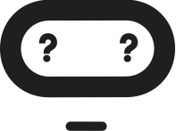

Need help?¶

If you have any questions about the software or the hardware for the micro:bit, please visit our stack exchange site as someone may have already answered your question! If they haven't, ask away!
Note
This site is currently in the proposal stages of the StackExchange process, and will hopefully become a fully fledged StackExchange area.
If you have found an issue with our documentation, or if something is not clear in the documentation, please file an issue on the microbit-docs github repository.
If you have found an issue with the runtime software, please file an issue on the microbit-dal github repository.